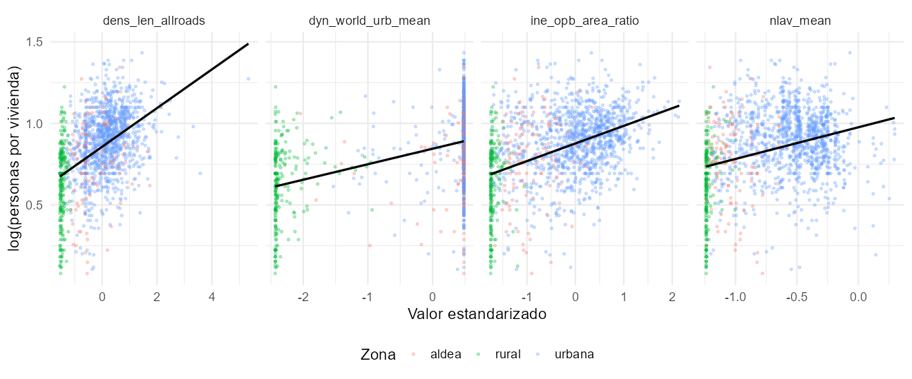
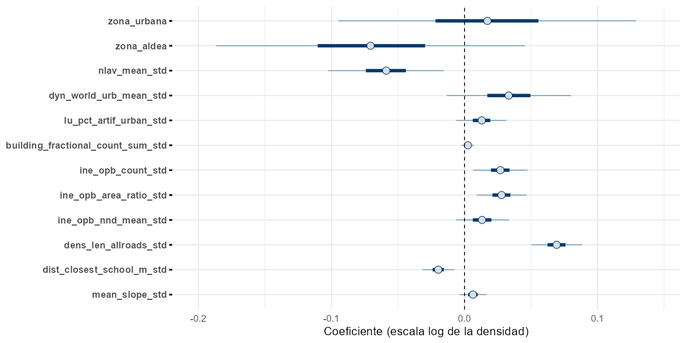
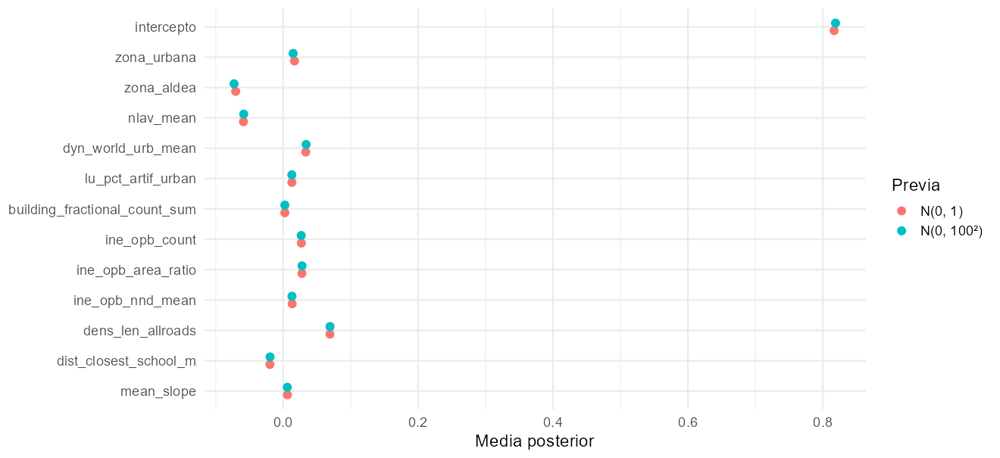
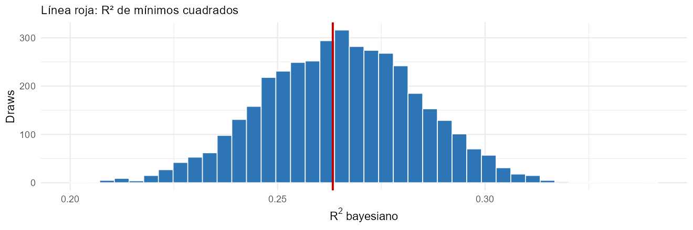
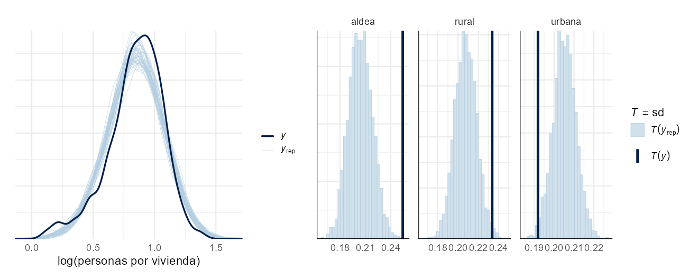
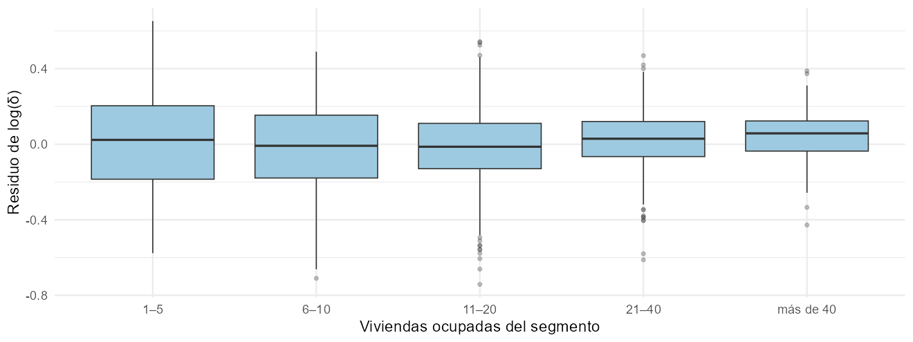

Introducción a modelos lineales con métodos bayesianos
CEPAL · UNFPA América Latina y el Caribe · INE Chile
Invalid Date
En D1S3 se estimaron una media y una dispersión comunes; en D1S4 se compararon zonas por separado. Ahora se incorporan zona y covariables simultáneamente.
El día 1 se modeló \(\log\delta_i \sim N(\mu, \sigma^2)\): la misma media para todos los segmentos. Pero la densidad depende de las características del segmento: zona, tipo de edificación, urbanización…
El modelo de regresión lineal hace que la media dependa de covariables:
\[ y_i = \log\delta_i = \beta_0 + \beta_1 x_{i1} + \dots + \beta_{p-1} x_{i,p-1} + \varepsilon_i, \qquad \varepsilon_i \overset{iid}{\sim} N(0, \sigma^2). \]
Con \(n\) segmentos y \(p\) columnas en la matriz de diseño:
\[ \mathbf{y} = \mathbf{X}\boldsymbol\beta + \boldsymbol\varepsilon, \qquad \boldsymbol\varepsilon \sim N_n(\mathbf{0}, \sigma^2\mathbf{I}_n), \]
\[ \mathbf{y} = \begin{pmatrix} y_1 \\ \vdots \\ y_n\end{pmatrix}, \quad \mathbf{X} = \begin{pmatrix} 1 & x_{11} & \cdots & x_{1,p-1} \\ \vdots & & & \vdots \\ 1 & x_{n1} & \cdots & x_{n,p-1}\end{pmatrix}, \quad \boldsymbol\beta = \begin{pmatrix}\beta_0 \\ \vdots \\ \beta_{p-1}\end{pmatrix}. \]
Equivalentemente, \(\mathbf{y} \mid \boldsymbol\beta, \sigma \sim N_n(\mathbf{X}\boldsymbol\beta, \sigma^2\mathbf{I}_n)\).
Como el modelo está en escala logarítmica, los efectos son multiplicativos:
\[ \delta_i = e^{\beta_0}\; e^{\beta_1 x_{i1}}\; \cdots\; e^{\beta_{p-1} x_{i,p-1}}\; e^{\varepsilon_i}. \]
Cada covariable se estandariza con su media y desviación estándar nacionales:
\[ z_{ik} = \frac{x_{ik} - \bar x_k}{s_k}. \]
Se usan los 1.455 segmentos aptos: según el indicador operativo: sin viviendas colectivas y con densidad definida mayor que 1. El código comprueba además positividad, finitud y rango completo del diseño.
La elegibilidad selecciona un subconjunto de segmentos; generalizar sus relaciones a los no aptos requiere evaluar la transportabilidad del modelo. El filtro no convierte la Normal en una verosimilitud truncada.
# Matriz de diseno: intercepto, zona (rural = referencia) y covariables estandarizadas
construir_X <- function(datos) {
cbind(intercepto = 1,
zona_urbana = as.numeric(datos$zona == "urbana"),
zona_aldea = as.numeric(datos$zona == "aldea"),
as.matrix(datos[, covariables]))
}
X <- construir_X(aptos)
stopifnot(all(is.finite(aptos$delta)), all(aptos$delta > 0),
all(is.finite(X)), nrow(X) > ncol(X), qr(X)$rank == ncol(X))
y <- log(aptos$delta)
dim(X)grafico_exploracion <- aptos %>%
select(delta, zona, nlav_mean_std, dyn_world_urb_mean_std, ine_opb_area_ratio_std, dens_len_allroads_std) %>%
pivot_longer(ends_with("_std"), names_to = "covariable", values_to = "valor") %>%
mutate(covariable = str_remove(covariable, "_std$")) %>%
ggplot(aes(valor, log(delta))) +
geom_point(aes(colour = zona), alpha = 0.3, size = 1) +
geom_smooth(method = "lm", formula = y ~ x, se = FALSE, colour = "black") +
facet_wrap(~ covariable, scales = "free_x", nrow = 1) +
labs(x = "Valor estandarizado", y = "log(personas por vivienda)", colour = "Zona") +
theme(legend.position = "bottom")
guardar_figura(grafico_exploracion, "grafico_exploracion", alto = 5)
La línea negra resume una tendencia lineal descriptiva en cada panel; no controla simultáneamente por zona ni por las demás covariables.
Minimiza la suma de cuadrados de los residuos:
\[ S(\boldsymbol\beta) = (\mathbf{y} - \mathbf{X}\boldsymbol\beta)^\top(\mathbf{y} - \mathbf{X}\boldsymbol\beta) = \mathbf{y}^\top\mathbf{y} - 2\boldsymbol\beta^\top\mathbf{X}^\top\mathbf{y} + \boldsymbol\beta^\top\mathbf{X}^\top\mathbf{X}\boldsymbol\beta. \]
Derivando e igualando a cero:
\[ \frac{\partial S}{\partial\boldsymbol\beta} = -2\mathbf{X}^\top\mathbf{y} + 2\mathbf{X}^\top\mathbf{X}\boldsymbol\beta = \mathbf{0} \quad\Longrightarrow\quad \hat{\boldsymbol\beta} = (\mathbf{X}^\top\mathbf{X})^{-1}\mathbf{X}^\top\mathbf{y}. \]
Existe si \(\mathbf{X}^\top\mathbf{X}\) es invertible, es decir, si las columnas de \(\mathbf{X}\) no son colineales.
Con \(\mathbf{y} = \mathbf{X}\boldsymbol\beta + \boldsymbol\varepsilon\):
\[ E(\hat{\boldsymbol\beta}) = (\mathbf{X}^\top\mathbf{X})^{-1}\mathbf{X}^\top\mathbf{X}\boldsymbol\beta = \boldsymbol\beta, \qquad \text{Var}(\hat{\boldsymbol\beta}) = \sigma^2(\mathbf{X}^\top\mathbf{X})^{-1}, \]
y \(\sigma^2\) se estima con
\[ \hat\sigma^2 = \frac{(\mathbf{y} - \mathbf{X}\hat{\boldsymbol\beta})^\top(\mathbf{y} - \mathbf{X}\hat{\boldsymbol\beta})}{n - p}. \]
Si dos covariables son casi colineales, \(\mathbf{X}^\top\mathbf{X}\) es casi singular y \((\mathbf{X}^\top\mathbf{X})^{-1}\) tiene elementos enormes: los errores estándar explotan. La colinealidad puede dificultar la identificación y el muestreo, pero no demuestra por sí sola la causa de problemas del modelo de Chile. Esos problemas se examinarán en las sesiones de diagnóstico.
| termino | estimacion | error_est | valor_p |
|---|---|---|---|
| intercepto | 0,8199 | 0,0512 | 0,0000 |
| zona_urbana | 0,0133 | 0,0585 | 0,8204 |
| zona_aldea | -0,0742 | 0,0599 | 0,2156 |
| nlav_mean | -0,0586 | 0,0219 | 0,0075 |
| dyn_world_urb_mean | 0,0347 | 0,0240 | 0,1482 |
| lu_pct_artif_urban | 0,0127 | 0,0097 | 0,1873 |
| building_fractional_count_sum | 0,0025 | 0,0023 | 0,2832 |
| ine_opb_count | 0,0270 | 0,0102 | 0,0084 |
| ine_opb_area_ratio | 0,0277 | 0,0098 | 0,0048 |
| ine_opb_nnd_mean | 0,0134 | 0,0103 | 0,1946 |
| dens_len_allroads | 0,0693 | 0,0098 | 0,0000 |
| dist_closest_school_m | -0,0198 | 0,0062 | 0,0016 |
| mean_slope | 0,0062 | 0,0052 | 0,2339 |
\[ p(\mathbf{y} \mid \boldsymbol\beta, \sigma) = (2\pi\sigma^2)^{-n/2}\exp\!\Big(-\frac{1}{2\sigma^2}(\mathbf{y} - \mathbf{X}\boldsymbol\beta)^\top(\mathbf{y} - \mathbf{X}\boldsymbol\beta)\Big). \]
Usando \(\hat{\boldsymbol\beta}\) de MCO, la suma de cuadrados se descompone:
\[ (\mathbf{y} - \mathbf{X}\boldsymbol\beta)^\top(\mathbf{y} - \mathbf{X}\boldsymbol\beta) = (n - p)\hat\sigma^2 + (\boldsymbol\beta - \hat{\boldsymbol\beta})^\top\mathbf{X}^\top\mathbf{X}(\boldsymbol\beta - \hat{\boldsymbol\beta}). \]
Con \(\sigma\) fija y diseño de rango completo, como función de \(\boldsymbol\beta\) la verosimilitud es el núcleo de una normal centrada en \(\hat{\boldsymbol\beta}\) con covarianza \(\sigma^2(\mathbf{X}^\top\mathbf{X})^{-1}\).
\[ \beta_k \overset{iid}{\sim} N(0, 1), \qquad \sigma \sim \text{Cauchy}^+(0;\ 2{,}5). \]
Con \(\boldsymbol\beta \sim N_p(\mathbf{0}, \mathbf{I}_p)\):
\[ \begin{aligned} p(\boldsymbol\beta \mid \sigma, \mathbf{y}) &\propto \exp\!\Big(-\frac{1}{2\sigma^2}(\mathbf{y} - \mathbf{X}\boldsymbol\beta)^\top(\mathbf{y} - \mathbf{X}\boldsymbol\beta) - \frac{1}{2}\boldsymbol\beta^\top\boldsymbol\beta\Big) \\ &\propto \exp\!\Big(-\frac{1}{2}\Big[\boldsymbol\beta^\top\Big(\frac{\mathbf{X}^\top\mathbf{X}}{\sigma^2} + \mathbf{I}\Big)\boldsymbol\beta - 2\boldsymbol\beta^\top\frac{\mathbf{X}^\top\mathbf{y}}{\sigma^2}\Big]\Big). \end{aligned} \]
Completando el cuadrado:
\[ \boldsymbol\beta \mid \sigma, \mathbf{y} \sim N_p\big(\mathbf{m}, \mathbf{V}\big), \qquad \mathbf{V} = \Big(\frac{\mathbf{X}^\top\mathbf{X}}{\sigma^2} + \mathbf{I}\Big)^{-1}, \quad \mathbf{m} = \mathbf{V}\frac{\mathbf{X}^\top\mathbf{y}}{\sigma^2}. \]
\[ \mathbf{m} = \big(\mathbf{X}^\top\mathbf{X} + \sigma^2\mathbf{I}\big)^{-1}\mathbf{X}^\top\mathbf{y}. \]
# Con beta ~ N(0, I) y sigma fija en su estimador, la condicional de beta es normal:
# beta | sigma, y ~ N( (X'X/sigma^2 + I)^{-1} X'y/sigma^2 , (X'X/sigma^2 + I)^{-1} )
s <- sigma(ajuste_mco)
precision <- crossprod(X) / s^2 + diag(ncol(X))
covarianza <- solve(precision)
media_condicional <- covarianza %*% crossprod(X, y) / s^2// Regresion lineal bayesiana para log(personas por vivienda)
data {
int<lower=1> n; // segmentos
int<lower=1> p; // columnas de X (incluye el intercepto)
matrix[n, p] X; // covariables
vector[n] y; // log(delta_i)
real<lower=0> sd_beta; // desviacion estandar de la previa de beta
}
parameters {
vector[p] beta;
real<lower=0> sigma;
}
model {
beta ~ normal(0, sd_beta);
sigma ~ cauchy(0, 2.5);
y ~ normal(X * beta, sigma);
}
generated quantities {
// Replicas de los datos para el chequeo predictivo
array[n] real y_rep = normal_rng(X * beta, sigma);
}matrix[n, p] X y X * beta: el predictor lineal de todos los segmentos en una sola operación (vectorización).sd_beta como dato permite cambiar la previa sin recompilar.y_rep: réplicas de los datos en cada draw, para el chequeo predictivo.normal_rng vectorizado devuelve un arreglo con un valor por segmento.resumen <- summarise_draws(as_draws_df(fit_lineal), "mean", "sd", "rhat", "ess_bulk", "ess_tail", "mcse_mean") %>%
filter(str_starts(variable, "beta|sigma")) %>%
mutate(termino = c(colnames(X), "sigma")[match(variable,
c(paste0("beta[", seq_len(ncol(X)), "]"), "sigma"))], .after = variable)
c(Rhat_max = max(resumen$rhat), ESS_min = min(resumen$ess_bulk))| Rhat_max | ESS_bulk_min | ESS_tail_min |
|---|---|---|
| 1,003 | 1.802 | 2.228 |
Revise R-hat, ESS_bulk y ESS_tail junto con trazas y diagnósticos NUTS. Los indicadores favorables no prueban convergencia ni validan la especificación del modelo.
draws_beta <- as.data.frame(fit_lineal, pars = "beta") %>% setNames(colnames(X))
grafico_coeficientes <- mcmc_intervals(select(draws_beta, -intercepto), prob = 0.5, prob_outer = 0.95) +
geom_vline(xintercept = 0, linetype = "dashed") +
labs(x = "Coeficiente (escala log de la densidad)")
guardar_figura(grafico_coeficientes, "grafico_coeficientes", alto = 6)
comparacion <- resumen %>%
filter(termino != "sigma") %>%
transmute(termino = str_remove(termino, "_std$"),
media_bayes = mean, de_bayes = sd,
condicional_sigma_fija = media_condicional[, 1],
mco = coef(ajuste_mco),
efecto_pct = if_else(termino == "intercepto", NA_real_,
colMeans(100 * (exp(as.matrix(draws_beta)) - 1))))
comparacion| termino | media_bayes | de_bayes | condicional_sigma_fija | mco | efecto_pct |
|---|---|---|---|---|---|
| intercepto | 0,817 | 0,050 | 0,818 | 0,820 | NA |
| zona_urbana | 0,017 | 0,057 | 0,016 | 0,013 | 1,847 |
| zona_aldea | -0,070 | 0,059 | -0,072 | -0,074 | -6,638 |
| nlav_mean | -0,059 | 0,022 | -0,059 | -0,059 | -5,703 |
| dyn_world_urb_mean | 0,033 | 0,024 | 0,034 | 0,035 | 3,423 |
| lu_pct_artif_urban | 0,013 | 0,010 | 0,013 | 0,013 | 1,297 |
| building_fractional_count_sum | 0,002 | 0,002 | 0,002 | 0,002 | 0,248 |
| ine_opb_count | 0,027 | 0,010 | 0,027 | 0,027 | 2,729 |
| ine_opb_area_ratio | 0,028 | 0,010 | 0,028 | 0,028 | 2,822 |
| ine_opb_nnd_mean | 0,013 | 0,010 | 0,013 | 0,013 | 1,341 |
| dens_len_allroads | 0,069 | 0,010 | 0,069 | 0,069 | 7,180 |
| dist_closest_school_m | -0,020 | 0,006 | -0,020 | -0,020 | -1,957 |
| mean_slope | 0,006 | 0,005 | 0,006 | 0,006 | 0,630 |
condicional_sigma_fija es la media de \(\boldsymbol\beta\mid\sigma,\mathbf y\) evaluada en \(\hat\sigma\). Stan integra la incertidumbre de \(\sigma\): no es una verificación exacta de la misma posterior.efecto_pct es la media posterior de \(100(e^{\beta_k}-1)\), calculada draw a draw. Para covariables continuas se refiere a una desviación estándar; para zona es una comparación con rural. El intercepto es un nivel base, no un efecto de cambio.La distribución posterior permite propagar la incertidumbre de coeficientes y dispersión a funciones y predicciones.
¿Y si la previa fuera mucho más vaga, \(\beta_k \sim N(0, 100^2)\)? Como sd_beta es un dato, no hay que recompilar:
fit_vaga <- sampling(modelo_lineal, data = modifyList(datos_stan, list(sd_beta = 100)),
chains = 4, iter = 2000, warmup = 1000, seed = 5678, refresh = 0)
grafico_previa <- tibble(termino = str_remove(colnames(X), "_std$"),
`N(0, 1)` = colMeans(draws_beta),
`N(0, 100²)` = colMeans(as.data.frame(fit_vaga, pars = "beta"))) %>%
pivot_longer(-termino, names_to = "previa", values_to = "media") %>%
ggplot(aes(media, fct_rev(factor(termino, levels = str_remove(colnames(X), "_std$"))), colour = previa)) +
geom_point(size = 3, position = position_dodge(width = 0.5)) +
labs(x = "Media posterior", y = NULL, colour = "Previa")
guardar_figura(grafico_previa, "grafico_previa", alto = 5.5)
Compare los desplazamientos por término y los diagnósticos de ambos ajustes. La sensibilidad debe examinarse también en intervalos y predicciones, no solo en medias.
El \(R^2\) bayesiano (Gelman et al. 2019) se calcula en cada draw como la varianza explicada sobre la total:
\[ R^2_{(s)} = \frac{\text{Var}_{i}\big(\mathbf{x}_i^\top\boldsymbol\beta^{(s)}\big)}{\text{Var}_{i}\big(\mathbf{x}_i^\top\boldsymbol\beta^{(s)}\big) + \sigma^{2(s)}}, \]
donde \(\text{Var}_i\) es la varianza entre segmentos. Esta definición:
sigma_draws <- as.data.frame(fit_lineal)$sigma
var_ajustada <- apply(as.matrix(draws_beta) %*% t(X), 1, var)
r2 <- var_ajustada / (var_ajustada + sigma_draws^2)
r2_mco <- 1 - sum(residuals(ajuste_mco)^2) / sum((y - mean(y))^2) # lm sin intercepto no centra el R2
tabla_r2 <- tibble(R2_media = mean(r2), q2.5 = quantile(r2, 0.025), q97.5 = quantile(r2, 0.975),
R2_mco = r2_mco)
tabla_r2| R2_media | q2.5 | q97.5 | R2_mco |
|---|---|---|---|
| 0,265 | 0,228 | 0,301 | 0,263 |

Las covariables explican solo una parte de la variabilidad de la densidad. El resto se captura con \(\sigma\): el modelo de población debe propagar esa incertidumbre a la predicción.
Para cada draw \(s\) se simula \(\mathbf{y}^{rep,(s)} \sim N(\mathbf{X}\boldsymbol\beta^{(s)}, \sigma^{2(s)}\mathbf{I})\) y se compara con \(\mathbf{y}\):
y_rep <- as.matrix(fit_lineal, pars = "y_rep")
set.seed(1)
idx <- sample(nrow(y_rep), 50)
grafico_ppc <- ppc_dens_overlay(y, y_rep[idx, ]) + labs(x = "log(personas por vivienda)") +
ppc_stat_grouped(y, y_rep, group = aptos$zona, stat = "sd") +
plot_layout(widths = c(1, 1.3))
guardar_figura(grafico_ppc, "grafico_ppc", alto = 4.8)
Revise la densidad global y la desviación por zona. Una superposición global favorable puede ocultar discrepancias de subgrupos; si aparecen, se debe evaluar una estructura de dispersión más flexible.
\(\log(Y_i/V_i)\) no es igual de preciso en todos los segmentos. Si \(Y_i \sim \text{Poisson}(\delta_i V_i)\), por el método delta, con media del conteo suficientemente grande y lejos de cero:
\[ \text{Var}\Big(\log\frac{Y_i}{V_i}\Big) \approx \Big(\frac{d\log u}{du}\Big|_{u = \delta_i V_i}\Big)^2\text{Var}(Y_i) = \frac{1}{(\delta_i V_i)^2}\,\delta_i V_i = \frac{1}{\delta_i V_i}. \]
El modelo lineal supone la misma varianza \(\sigma^2\) para todos: mezcla la variación real de la densidad con el ruido de conteo.
grafico_residuos <- aptos %>%
mutate(residuo = y - fitted(ajuste_mco),
viviendas = cut(n_vpo, c(0, 5, 10, 20, 40, Inf),
labels = c("1–5", "6–10", "11–20", "21–40", "más de 40"))) %>%
ggplot(aes(viviendas, residuo)) +
geom_boxplot(fill = "#9ecae1", outlier.alpha = 0.3) +
labs(x = "Viviendas ocupadas del segmento", y = "Residuo de log(δ)")
tabla_residuos <- aptos %>%
mutate(residuo = y - fitted(ajuste_mco),
viviendas = cut(n_vpo, c(0, 5, 10, 20, 40, Inf),
labels = c("1–5", "6–10", "11–20", "21–40", "más de 40"))) %>%
group_by(viviendas) %>%
summarise(segmentos = n(), desv_residuo = sd(residuo),
desv_poisson_aprox = mean(sqrt(1 / (n_vpo * delta))))
| viviendas | segmentos | desv_residuo | desv_poisson_aprox |
|---|---|---|---|
| 1<U+2013>5 | 71 | 0,258 | 0,332 |
| 6<U+2013>10 | 281 | 0,236 | 0,241 |
| 11<U+2013>20 | 544 | 0,196 | 0,171 |
| 21<U+2013>40 | 451 | 0,156 | 0,124 |
| m<U+00E1>s de 40 | 108 | 0,136 | 0,085 |
Compare la desviación de los residuos con la aproximación Poisson, \(1/\sqrt{\delta_i V_i}\). La comparación es descriptiva: no descompone formalmente la varianza ni demuestra que el ruido de conteo explique la mayor parte. El modelo de conteos de D2S3 representa explícitamente este componente.
Para un segmento con covariables \(\tilde{\mathbf{x}}\), la predictiva posterior es
\[ p(\tilde y \mid \mathbf{y}) = \iint N\big(\tilde y \mid \tilde{\mathbf{x}}^\top\boldsymbol\beta, \sigma^2\big)\,p(\boldsymbol\beta, \sigma \mid \mathbf{y})\,d\boldsymbol\beta\,d\sigma, \]
y en la escala de la densidad:
\[ \tilde\delta^{(s)} = \exp\big(\tilde{\mathbf{x}}^\top\boldsymbol\beta^{(s)} + \sigma^{(s)}\varepsilon^{(s)}\big), \qquad \varepsilon^{(s)} \sim N(0, 1). \]
Su varianza tiene dos partes: \(\text{Var}(\tilde y \mid \mathbf{y}) = \underbrace{E(\sigma^2 \mid \mathbf{y})}_{\text{entre segmentos}} + \underbrace{\tilde{\mathbf{x}}^\top\text{Var}(\boldsymbol\beta \mid \mathbf{y})\,\tilde{\mathbf{x}}}_{\text{incertidumbre de } \boldsymbol\beta}\).
Se mantiene el diseño y la estandarización del ajuste. Las predicciones en no aptos son una extrapolación del modelo seleccionado; esta tabla ilustra personas por vivienda, no población corregida por cobertura. La media observada se calcula con densidades finitas y no necesariamente con el mismo conjunto que el ajuste.
X_todos <- construir_X(segmentos)
stopifnot(identical(colnames(X_todos), colnames(X)), all(is.finite(X_todos)))
set.seed(1)
eta <- as.matrix(draws_beta) %*% t(X_todos) # draws x segmentos
delta_pred <- exp(eta + matrix(rnorm(length(eta)), nrow(eta)) * sigma_draws)
tabla_prediccion <- segmentos %>%
mutate(delta_pred = colMeans(delta_pred)) %>%
group_by(clasificacion_cobertura) %>%
summarise(segmentos = n(), delta_observado = mean(delta[is.finite(delta)], na.rm = TRUE),
delta_predicho = mean(delta_pred))
tabla_prediccion| clasificacion_cobertura | segmentos | delta_observado | delta_predicho |
|---|---|---|---|
| Completa | 915 | 2,432 | 2,358 |
| Parcial | 757 | 2,237 | 2,363 |
| Incompleta | 413 | 2,058 | 2,177 |
| fit | Rhat_max | ESS_bulk_min | ESS_tail_min | divergences | max_treedepth_hits |
|---|---|---|---|---|---|
| regularized | 1,003 | 1.802,336 | 2.227,990 | 0 | 0 |
| wide_prior | 1,004 | 1.717,138 | 2.253,451 | 0 | 0 |
Use R-hat menor que 1,01 y ESS_bulk/ESS_tail de al menos 400 como guía para cuatro cadenas; complemente con trazas, error Monte Carlo, divergencias y profundidad del árbol.
Andrés Gutiérrez · Stalyn Guerrero
Contacto: Andrés Gutiérrez
andres.gutierrez@cepal.org